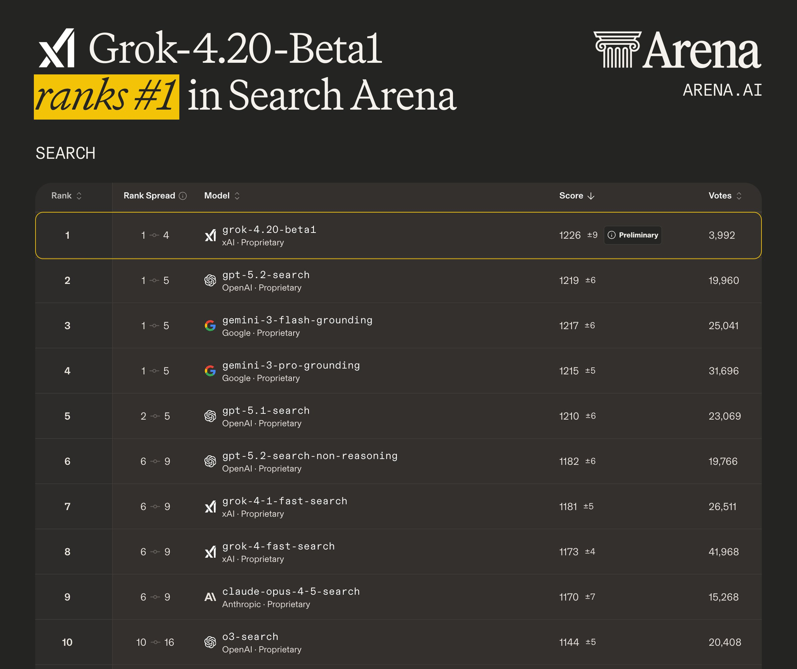
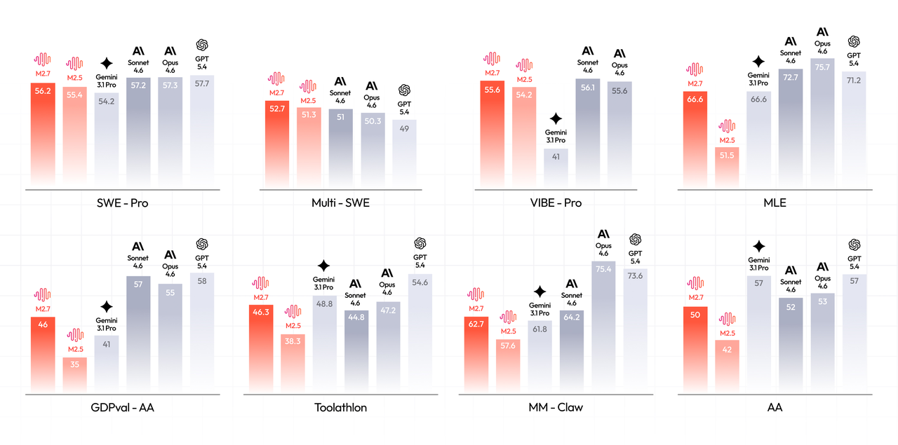
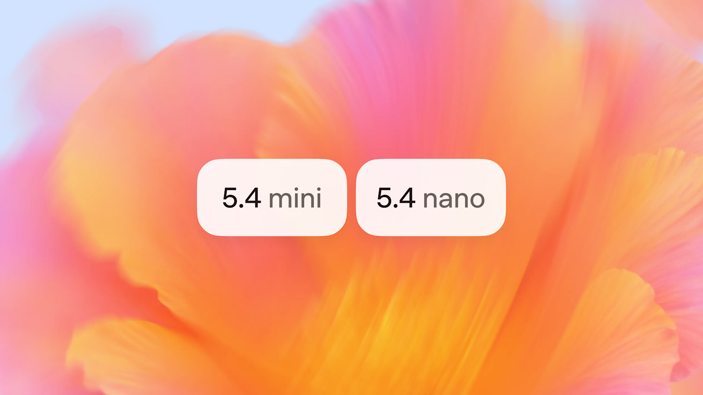

三月模型技术特点及发展趋势
本周重点：Kimi AttnRes · Grok 4.20 · MiniMax M2.7 · MiroThinker 1.7 · MiMo-V2-Pro
月之暗面（Kimi）团队提出用注意力机制替代传统固定残差累加，让模型每层可选择性回顾前层信息。训练效率提升 25%，推理延迟增加不到 2%。马斯克、Karpathy 纷纷围观。
陈广宇（Nathan）与 RoPE 作者苏剑林、Kimi Linear 一作张宇并列共同一作
Kimi Linear 48B (3B activated) · 1.4T tokens · Block AttnRes N≈8
AI 能力涌现方式的转变。 三家公司以不同形式验证了同一方向：agent 框架的核心能力正在被内化为模型的原生能力。
不同于以往单一模型，4.20 将 multi-agent 内化为模型原生能力


GPT-5.4 mini 多项能力逼近满血版，MiMo-V2-Pro 匿名霸榜 OpenRouter——小模型不再是「降级选择」，而是分层调度体系中真正的生产力担当。
OpenAI 继续把小模型推向快、强、便宜的实用区间，面向 agent execution 场景

GPT-5.4 mini · xhigh setting
MM / Vision / CUA benchmarks · mini 已具备三层 agentic 能力
↓ lower is better · xhigh setting · GPT-5 mini at high¹
mini 的能力边界与最佳调度策略
2026-03-18 · 1T+ 参数 / 42B active / 1M token 上下文
#3 全球 · 仅差 Opus 0.5 分 · 中国模型仅次于Minimax 2.7
#3 全球 · 接近 Opus 4.6
API pricing · 五大 Agent 框架合作
Per million tokens · 数据截至 2026-03-18
OpenRouter 日榜连续第一 · 累计 >1T tokens · Top 应用均为 Coding 工具
2026 年 3 月 · MiMo / MiniMax / DeepSeek / Qwen / Kimi 五强格局
PinchBench = OpenClaw Agent 执行评测 · Output $/M = 每百万 output tokens · 数据截至 2026-03-18